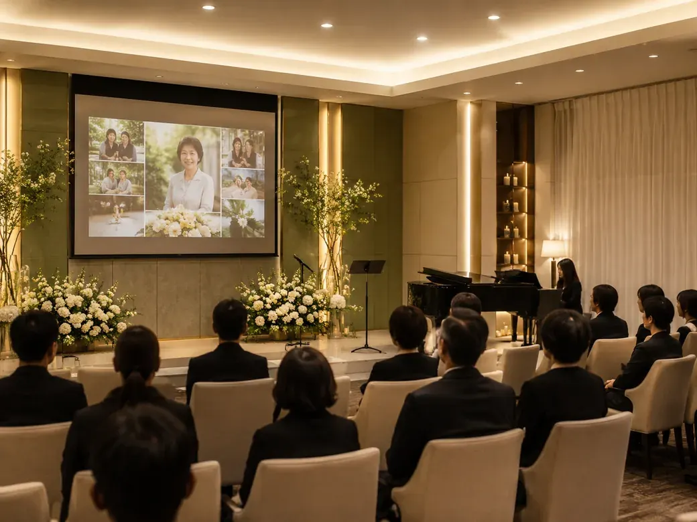
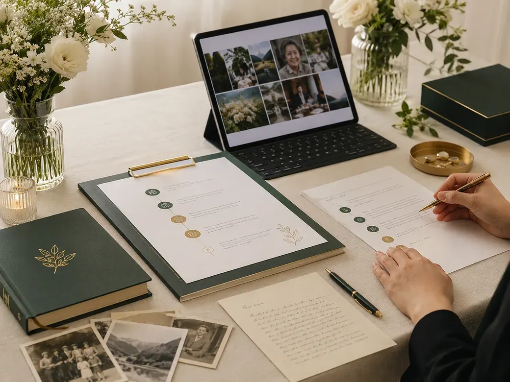
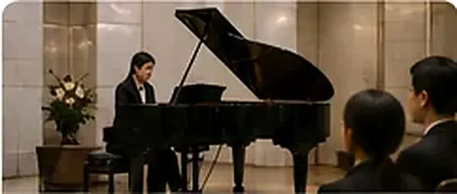

이별 추모식
이별 추모식은 무빈소 장례의 필수 절차가 아닙니다. 고인의 유지와 가족의 뜻에 따라 선택할 수 있으며, 시간과 장소 또한 필요와 여건에 따라 각자 다르게 진행됩니다.
무빈소장례에서도 입관과 발인은 기본 장례절차로 진행됩니다. 이별예식장은 가족의 뜻에 따라 별도의 추모식을 더할 수 있도록 돕습니다.
가족이 고인을 직접 뵙고 마지막 인사를 나누는 시간
장례식장을 떠나 화장장과 장지로 향하며 고인을 배웅하는 절차
영상·음악·편지·이야기로 고인의 삶을 기억하고 마음을 나누는 시간

형식보다 고인의 삶에 집중합니다.
사진과 영상, 음악, 가족의 편지와 이야기 등 고인을 기억하는 내용을 중심으로 구성합니다. 추모식의 기획과 준비, 현장 진행은 이별예식장이 함께합니다.
언제 진행하나요?
보통 장례 기간 중에 진행하며, 2일차 입관을 마치고 저녁 시간대에 진행하는 경우가 많습니다.
가급적 발인 당일 또는 이후 1~2일 내에 진행하여 추모 분위기를 이어갑니다.
어디에서 진행하나요?
안치·입관과 같은 장소에서 이동 부담을 줄여 진행합니다.
전문 추모식장, 호텔 소연회장, 회관 등 규모와 분위기에 맞춰 선택합니다.
교회·성당·사찰이나 가족에게 의미 있는 장소에서도 진행할 수 있습니다.
어떻게 준비하나요?
정해진 형식에 가족을 맞추기보다 필요한 순서만 선택합니다.

이별 추모식 프로그램
가족의 뜻에 맞춰 필요한 프로그램을 선택해 구성할 수 있습니다. 이별플래너가 가족분들과 상의하여 함께 만듭니다.
사진과 영상으로 고인의 삶을 함께 돌아봅니다.

고인이 좋아한 음악이나 가족에게 의미 있는 곡을 함께 듣습니다.
가족이 전하고 싶은 말과 추억을 나눕니다.
가족이나 친지가 고인을 기억하며 마음을 전합니다.
꽃을 놓고 조용히 마지막 인사를 드립니다.
기도·성가·연주 등 가족의 뜻에 맞는 순서를 더할 수 있습니다.
서비스 종류와 비용
추모식 준비 안내서 및 기본 프로그램 제공. 종교별 추모 형식, 추모식 장소 추천
가족 중심의 간결한 프로그램과 기본 현장 진행을 포함합니다.
가족과 친지가 함께하는 프로그램 기획과 현장 운영을 포함합니다.
장소 대관료는 별도입니다. 꽃장식, 다과·식사, 연주·공연, 추가 장비와 인력은 선택 항목이며 예식 구성에 따라 비용이 달라집니다.